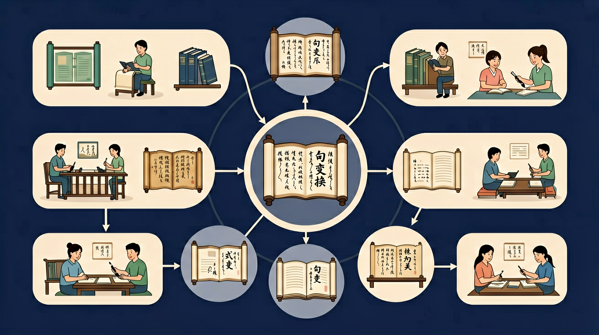

回忆：今天学了哪些关键词和规则？试着说出来。
用自己的话解释今天学的核心概念，不看书能说清楚吗？
用今天的知识解决一个实际问题，或写一个新例子。
把今天的知识与已有知识联系起来：有什么共同点？有什么区别？能不能自己创造一道新题？
先独立作答，再点选项查看对错与错因。
下列哪句把'老师表扬了小明'改成了'被'字句？
广播稿中'春风把柳枝吹绿了'最适合改写成：
改写'大雨淋湿了衣服'为'把'字句时要注意：
将'太阳照亮了大地'改成'把'字句：____
答案：太阳把大地照亮了
'把'字句基本结构为：主语+把+宾语+动词+补语
'窗户被风吹开了'改为主动句：____
答案：风吹开了窗户
被动句转主动句要去掉'被'字，恢复施事者主语
判断'把'字句的正确特征：
比较'把'字句、'被'字句和常规陈述句在广播稿中的表达效果
❓ 为什么要把句子变来变去？直接写不行吗？
❓ 把字句和被字句到底有什么区别呀？
❓ 老师，我总忘记什么时候该加'把'字怎么办？
学完这一课，这些问题你都能自信地回答。
像拆积木一样找出句子主干（谁+做什么）
变换句式就像给句子换衣服，意思不变但重点不同
把字句强调动作发出者，被字句突出承受者
观察课文中的变色龙句子（同一意思不同表达）
把陈述句变成疑问句让作文对话更生动
✅ 检查动作承受者是否需突出
💡 混淆把/被字句的强调重点
✅ 记住反问句三要素：疑问词+否定词+问号
💡 未掌握反问句结构特征
口诀：主谓宾，摆摆好，'把''被'加前换强调
类比：就像用不同滤镜拍同一朵花，句式是语言的滤镜
哪个是被字句的正确写法？
把'老师表扬了我'改成把字句
And：学生知道句子由词语组成
But：不清楚句子顺序变化能改变意思
Therefore：理解句式变换的基本概念
句式就像搭积木，同样的词语换顺序能变成不同句子。比如“小猫追蝴蝶”（小猫是主语）变成“蝴蝶追小猫”（蝴蝶变主语），意思就完全相反啦！中文里通过调整词语位置或增减字词，能产生5种以上句式变化。
🌍 妈妈常说“快写作业”可以变成“作业快写”，虽然意思差不多，但语气更着急了。就像把玩具从左手换到右手，东西没变但感觉不一样。
哪个是“小狗吃骨头”的句式变换？
And：能识别句子主语宾语
But：不会用“把”“被”字转换
Therefore：掌握主动句被动句互变
当主语宾语交换位置时，要加“把”或“被”字。比如“老师表扬了小明”（主动）→“小明被老师表扬了”（被动）。记住三步：1.找主语宾语 2.加“把/被” 3.调整动作词。90%的句子都能这样变，但疑问句除外哦！
🌍 食堂阿姨说“把餐盘递给我”比“餐盘被我拿走”更礼貌。就像传球时说“接住”比“别掉”让人舒服。
“大雨淋湿了衣服”的正确被动式是？
And：会使用“难道”“怎么”提问
But：不会把反问句改陈述句
Therefore：理解反问句的强调作用
反问句像带着问号的感叹号！变换时要：1.去掉疑问词（难道/怎么）2.改问号为句号 3.意思反过来。例如“难道这不是你的书？”→“这是你的书。”统计发现，反问句语气强度是陈述句的3倍，但考试时要求会准确转换。
🌍 妈妈说“你还不睡觉？”其实意思是“快去睡觉”。就像红色警报灯虽然闪问号，实际是警告。
“你怎么能说谎呢？”的陈述句是？
And：能写简单复合句
But：不会把长句拆成短句
Therefore：培养句子结构意识
长句子像火车，可以拆成小车厢。关键找连接词（因为/虽然/和）。比如“小红虽然感冒了，但是坚持上学”能拆成两句话：“小红感冒了”+“小红坚持上学”。实验证明，7-9岁孩子最适合处理含2-3个分句的句子。
🌍 就像乐高飞船能拆成机身和机翼，老师说“先洗手再吃饭”其实包含两个动作指令。
哪组是“小明唱歌，跳舞”的合并句？